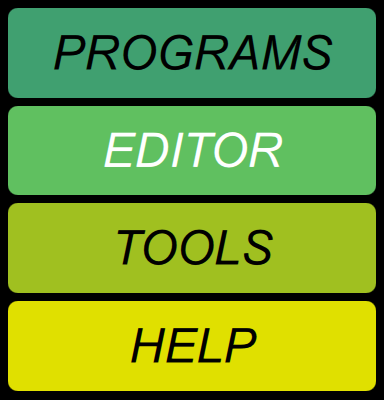

Navigation bar
 |
The clock button shows the current time. If connected to a Chroma, clicking it checks the Chroma’s clock, corrects it if it is off, and pops up a message indicating the result. Tap anywhere to dismiss the message. |
 |
The Program Info button shows the currently selected program. Tapping reloads it, long-pressing displays a popup with other functions. |
 |
The Connection button shows what MIDI port is selected, and its connection status. Clicking it lets you choose a different port. |
|
Clicking the logo pops up a message showing the version of the Toolkit, and if connected to a Chroma, the main Chroma firmware, the panel scanning firmware, and the Linux operating system. These are expressed as dates that the pieces of software were built. Tap anywhere to dismiss the message. |
|
|  |
The Screen buttons in the middle switch among the four screens. The currently selected one is highlighted with white letters. Since they don’t change anything, you can switch screens freely. However, long-pressing HELP also switches to the Home page. |
 |
The Undo/Redo buttons show what changes are next in line for undo or redo, and invoke those operations. |
Hotkeys
Pressing P, E, T, or H on the keyboard is another way to switch screens.
Pressing R or U on the keyboard is another way to invoke Redo or Undo.